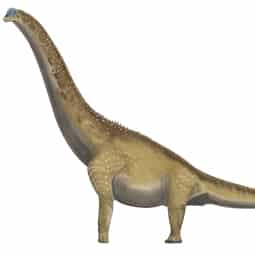
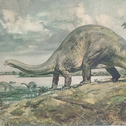
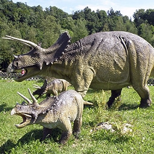

El megalodón o megalodonte (Carcharocles megalodon; del gr. μέγας megas ‘grande’, raíz megal-, y ὀδούς odoús ‘diente’, raíz odont-) es una especie extinta de tiburón que vivió entre hace 19,8 y 2,6 millones de años, aproximadamente, durante el Cenozoico (de inicios del Mioceno2 hasta el final del Plioceno).3 Anteriormente se pensaba que era miembro de la familia Lamnidae y pariente cercano del gran tiburón blanco (Carcharodon carcharias). Sin embargo, actualmente existe un consenso casi unánime de que pertenece a la familia extinta Otodontidae, que se separó de la ascendencia del gran tiburón blanco durante el Cretácico temprano.
Si bien C. megalodon es considerado como uno de los mayores y más poderosos depredadores en la historia de los vertebrados,4 los científicos difieren sobre si se habría parecido más a una versión más robusta del gran tiburón blanco, el tiburón peregrino (Cetorhinus maximus) o el tiburón tigre de arena (Carcharias taurus). La mayoría de las estimaciones del tamaño del megalodonte se extrapolan de los dientes; con estimaciones de longitud máxima de hasta 18 metros y estimaciones de longitud promedio de 10,5 metros. Las estimaciones sugieren que sus grandes mandíbulas podrían ejercer una fuerza de mordida de hasta 110,000 a 180,000 newtons. Los restos fósiles indican que este tiburón gigante tuvo una distribución cosmopolita, con áreas de cría en zonas costeras cálidas.5 C. megalodon probablemente tuvo una influencia muy importante en la estructura de las comunidades marinas de su época.
El animal se enfrentó a la competencia de los cetáceos comedores de ballenas, como Livyatan y otros cachalotes macroraptoriales y posiblemente orcas ancestrales más pequeñas. Como el tiburón prefería las aguas más cálidas, se cree que el enfriamiento oceánico asociado con el inicio de las edades de hielo, junto con la disminución de los niveles del mar y la pérdida resultante de áreas de cría adecuadas, también pudieron contribuir a su disminución. Una reducción en la diversidad de las ballenas barbadas y un cambio en su distribución hacia las regiones polares pudo reducir la fuente primaria de alimentos del megalodonte. Un estudio de 2019 revisó evidencia más reciente que sugiere que la competencia del gran tiburón blanco moderno también pudo contribuir a la extinción del megalodonte, junto con la fragmentación del rango que resulta en una extinción gradual y asíncrona como resultado del enfriamiento de los océanos hace unos 3.6-4 millones de años, mucho antes de lo que se suponía anteriormente. La extinción del tiburón parece haber afectado a otros animales; por ejemplo, el tamaño de las ballenas barbadas aumentó significativamente después de que el tiburón desapareciese.
El naturalista suizo Louis Agassiz le dio a este tiburón su nombre científico, Carcharodon megalodon, en 1835,11 en su trabajo de investigación Recherches sur les poissons fossiles12 (investigaciones sobre los peces fósiles), que completó en 1843. Como los dientes de C. megalodon son morfológicamente similares a los del gran tiburón blanco, Agassiz asignó la especie al género Carcharodon.11 Popularmente es apodado tiburón megadiente, 13 tiburón blanco gigante14 o incluso tiburón monstruo.
 |
 |  |
 |
 |  |